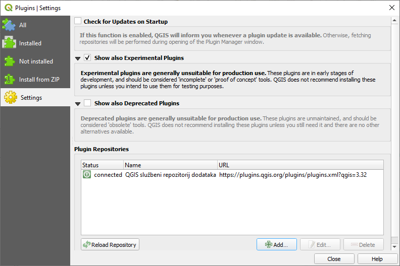
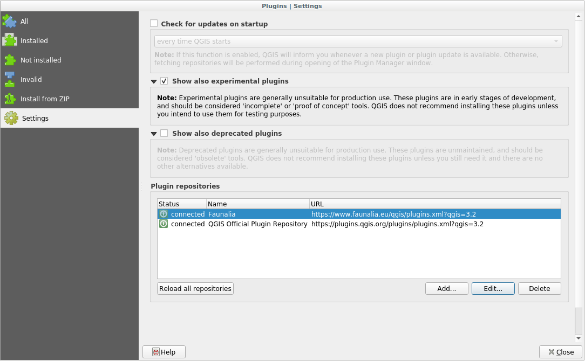

重要
翻訳は あなたが参加できる コミュニティの取り組みです。このページは現在 100.00% 翻訳されています。
9.1. レッスン: プラグインのインストールと管理
プラグインを使い始めるにはそれらをどのようにダウンロードし、インストールし、有効化するのか知る必要があります。では、 プラグインインストーラ と プラグインマネージャ の使い方を学びましょう。
このレッスンの目標: QGISのプラグインシステムを理解して使います.
9.1.1. ★☆☆ （初級レベル） 理解しよう: プラグインを管理する
プラグインマネージャ を開くには、メニュー をクリックします。
開かれたダイアログで プロセッシング プラグインを探しましょう。

このプラグインの横のボックスをクリックしてチェックを外し、それを無効にします。
閉じる をクリックします。
メニューを見てみると、 プロセシング メニューがなくなっていることに気がつくと思います。これは、今まで使っていた多くの処理関数が消えてしまったことを意味します! 例えば、 と メニューを見てください。これは、それらが プロセシング プラグインの一部であり、使用するにはプラグインを有効にする必要があるからです。
再び プラグインマネージャ を開き、 Processing プラグインの横にあるチェックボックスをクリックして、再度有効化します。
ダイアログを 閉じる します。Processing メニューと関数が再び利用可能になるはずです。
9.1.2. ★☆☆ （初級レベル） 理解しよう: 新しいプラグインをインストールする
有効化・無効化できるプラグインのリストは、現在インストールされているプラグインから引用されています。新しいプラグインをインストールするには:
プラグインマネージャ ダイアログで 未インストール オプションを選択します。インストール可能なプラグインがここにリストアップされます。このリストは、あなたの既存のシステム設定によって異なります。

プラグインを選択すると、そのプラグインに関する情報が表示されます

プラグイン情報パネルの下にある インストール ボタンをクリックして、興味のあるプラグインをインストールしてください。
注釈
プラグインに何らかのエラーがある場合、 無効 タブにリストアップされます。この場合、プラグインの所有者に連絡して、問題を解決することができます。
9.1.3. ★☆☆ （初級レベル） 理解しよう: 追加のプラグインリポジトリを設定する
利用可能なプラグインはどのプラグイン リポジトリ が設定されているかによって変わります。
QGISのプラグインは、オンライン上のリポジトリに保存されています。デフォルトでは、公式リポジトリ のみが有効です。つまり、そこで公開されているプラグインにのみアクセスすることができます。利用可能なツールの多様性を考えると、このリポジトリはあなたのニーズのほとんどを満たしてくれるはずです。
しかしデフォルトのものより多くのプラグインを試すこともできます。まず追加リポジトリを設定します。それには:
プラグインマネージャ ダイアログの 設定 タブを開いてください
 新しいリポジトリを追加するには 追加 をクリックします。
設定したい新しいリポジトリの名前とURLを入力します。 有効化 チェックボックスがチェックされていることを確認します。

新しいプラグインリポジトリがプラグインリポジトリの一覧の中に表示されます
 開発の初期段階にあるプラグインも表示するには 実験的プラグインを表示 チェックボックスをチェックします。
ここで 未インストール タブに戻ると、追加プラグインがインストールできることがわかります。
プラグインをインストールするには、リストでプラグインをクリックし、 インストール ボタンをクリックします。
9.1.4. 結論
QGISにプラグインをインストールするのは、簡単で効果的でしょう！
9.1.5. 次は?
次に、例としていくつかの便利なプラグインを紹介します。